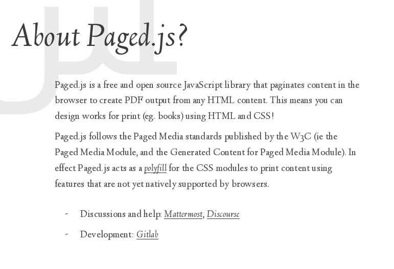
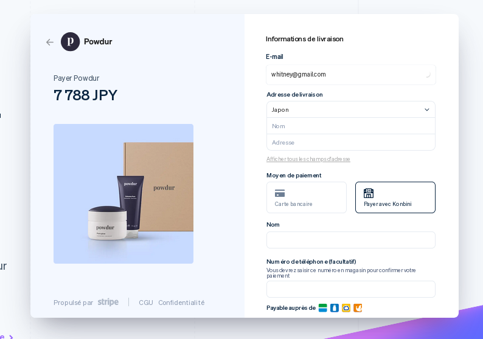
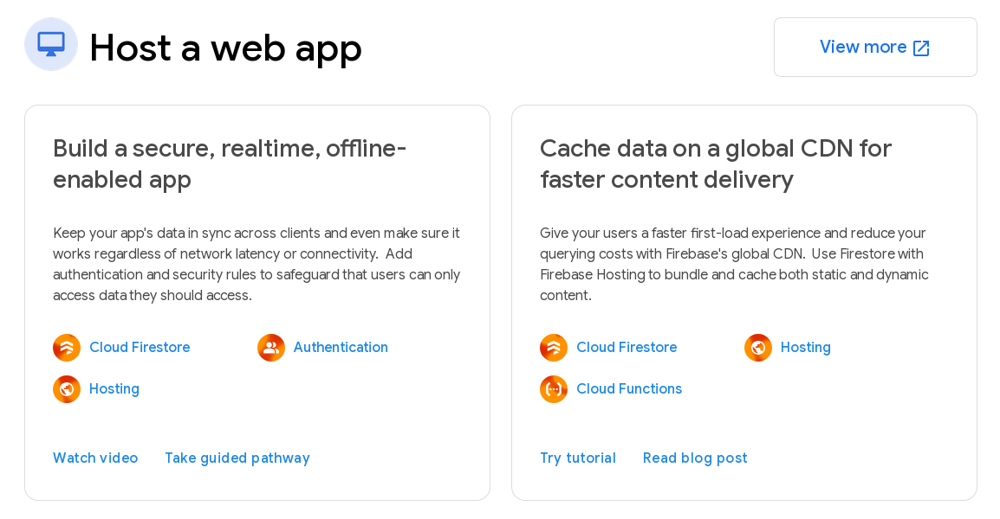

Menu Builder pour Restaurants
Qwenta est une application web permettant aux restaurateurs de créer, gérer et personnaliser plusieurs menus (plats, boissons, desserts), avec images, prix et options personnalisables. Une version mobile est envisagée à l'avenir.
- Veille
- Specifications Techniques
- Kanban
FRONTEND
VUE.js - VITE - PAGED.js
VUE.js
Menu Builder pour Restaurants
Qwenta est une application web permettant aux restaurateurs de créer, gérer et personnaliser plusieurs menus (plats, boissons, desserts), avec images, prix et options personnalisables. Une version mobile est envisagée à l'avenir.
- Veille
- Specifications Techniques
- Kanban
FRONTEND
VUE.js - VITE - PAGED.js
VUE.js
Un Framework JavaScript progressif, léger et performant, idéal pour les SPA. Dispose également d'un très bon service de modèles, qui est très bien pour les modèles de menus personnalisés.

-
Pourquoi ce choix ?
- Sa facilité d'intégration avec Firebase
- Léger et performant
- Un 'template' très bien pour les menus personnalisés
-
Intégration Facile :
- VitePour transformer les composants .vue et pour minifier les fichiers .js
- CSS ModulesPour créer des Modules CSS Modules pour etre plus performant
- Vue RouterGestion des routes (ex. : menus, dashboard, profil)
- VuexPour gérer l'état global (ex. : menus en cours, utilisateur connecté)
- FirebaseFacilite la connexion aux services Firebase (authentification, DB, stockage, etc.)
PAGED.js
Paged.js est une JavaScript library gratuite et open source qui pagine le contenu dans le navigateur pour créer une sortie PDF à partir de n'importe quel contenu HTML. Vous pouvez ainsi concevoir des ouvrages destinés à l'impression (par exemple, des livres) en utilisant HTML et CSS.

-
Pourquoi ce choix ?
- Très simple à utiliser, et peut facilement convertir les modèles .vue au format PDF (ex. : A4, ou autre).
- Léger et performant
- Un 'template' très bien pour les menus personnalisés
BACKEND
STRIPE - FIREBASE
STRIPE
Acceptez les paiements en ligne et en personne partout dans le monde grâce à un système de paiement conçu pour toutes les entreprises, des start-up aux grandes multinationales.

- Pourquoi ce choix ?
- API de paiement utilisée pour gérer des services de paiement en ligne.
- Facile à connecter via Firebase Functions et Stripe SDK côté Vue
FIREBASE
Configurez votre backend sans gérer de serveurs. Évoluez facilement pour prendre en charge des millions d'utilisateurs grâce à des bases de données, des solutions d'hébergement et de stockage, et des options de calcul. Développez et testez tout en local grâce à nos émulateurs.
Avantages sur un backend traditionnel: pas de
configuration de serveur (Nginx, Apache), pas de base relationnelle à
maintenir (PostgreSQL, MySQL), sécurité et évolutivité intégrées.

-
Pourquoi ce choix ?
- Faible maintenance (pas de serveur à configurer)
- Intégration directe avec Vue
- Scalabilité automatique
- Gratuit ou peu coûteux pour les petites structures
- Realtime Database – Structure NoSQL, idéale pour les menus dynamiques
- Firebase Storage – Stockage des images de plats (intégré facilement dans l'interface admin)
- Firebase Hosting – Déploiement sécurisé et rapide de l'app
- Firebase Auth – Authentification complète (email, réseaux sociaux, accès sécurisé)